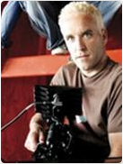

About Us
The Company
We launched WonderHowTo in January 2008 with our own money, and later, with professional backing from General Catalyst. Given our backgrounds in television programming, motion graphics, and software development, early on we chose to pursue instructional topics we were most curious about. With an original taxonomy of 476 categories, sometimes we wandered pretty far off the reservation. But we always kept exploring. More recently, we have chosen to narrow our focus into fewer verticals we found genuinely intriguing, inherently dynamic (and not evergreen), and ripe for future innovation.
To create even greater focus and expertise, in early 2017 with approximately 12 million monthly uniques, we launched the WonderHowTo Network. Four new sibling verticals, covering not just How-Tos, but the latest news, reviews, rumors, and insider information on the areas we find the most interesting. We would love to hear your feedback. Help us make these verticals...wonderful.
The Team

Stephen Chao
Co-Founder
Co-founder with Mike G. I majored in Latin at Harvard. Spent two gonzo years hunting stories for the National Enquirer. My eyes were opened by the tireless curiosity of the case study method at Harvard Business School. Before the era of massive fragmentation, I ran Fox Television and USA Network. At WonderHowTo, our glorious burden is to explore those verticals we find...wonderful.
Mike Goedecke
Co-Founder
Hi, my name is Mike and I am one of the founders of WonderHowTo (with Stephen Chao). My passion is filmmaking, directing and shooting to be specific. I got my MFA from USC film school. I'm on the set whenever I get the chance. I love Art and Design and have had my own company for 20 years creating commercials, network branding and short films.
Bryan Crow
CEO / CTO
Got started coding by hacking together a home-brew simon game for the SEGA Dreamcast VMU at 15, and more officially by studying CS & IT Management at CTU. Now 1 start-up sold, 2 kids, 5 domains, and 25 programming languages later, I'm proud to have grown the WonderHowTo network of sites from zero to over 2 billion pageviews.
Jennifer Welsh
Editor in Chief
As a young girl, I spent most afternoons in my mother's research lab sorting instruments, eventually growing flasks of cells and testing out compounds that could potentially be used to treat cancer. Our dinner table discussions prominently featured the word "apoptosis" and drove my passion for everything science and tech. I parlayed this love into an undergraduate degree in Biological Sciences from the University of Notre Dame, then into a job running the cell culture and antiviral drug toxicity testing wing at a biotechnology startup in San Francisco. When I got sick of the smell of ethanol and the buzz and blue glow of the sterilizing UV lights, I enrolled in the University of California, Santa Cruz's Science Communication program to learn about writing and journalism, and to develop my passion for new media and blogging. After stints at WIRED, The Scientist, Discover Magazine, and LiveScience, I spent a few years at Business Insider, where I built the science vertical from scratch and helped launch the ephemeral standalone site Tech Insider. In 2016, I joined WonderHowTo to start building our network of sites focused on science and technology, drive editorial operations site-wide, and open our New York City offices.
Justin Meyers
Managing Editor
Writing has always been my passion, I just haven’t always known it. As a young child, I’d draw my own comic books with elaborate storylines because I thought I could do better than everyone else. In high school, I was the only kid who could get away with profanity in assignments because I didn’t just use it to be cool. When I became a commercial/industrial electrician, I’d complete crossword puzzles at lunch and write short film ideas at night. During my 4+ years as a US Army 11B, I fell in love with David Lynch’s Mulholland Dr. and penned multiple novellas in my limited spare time that I believed would make great films one day. In college, I had the habit of turning three-page essays in 15-pagers because everything was just that fascinating to me. I earned my screenwriting degree at Columbia College Hollywood where I dabbled in film editing, cinematography, and photography, and found out that I excelled at script editing/doctoring. I began working for WonderHowTo part-time in 2008 curating videos for every topic imaginable, eventually hosting my own Scrabble blog, until I settled in naturally to a full-time editor position specializing in Macs/iPhones, my preferred tools of the trade. These days, I run Gadget Hacks’ iOS department and help maintain quality across the whole WonderHowTo network.